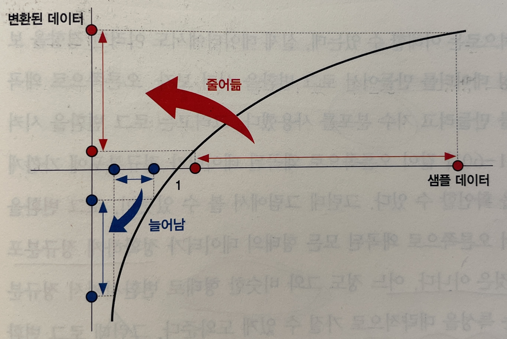
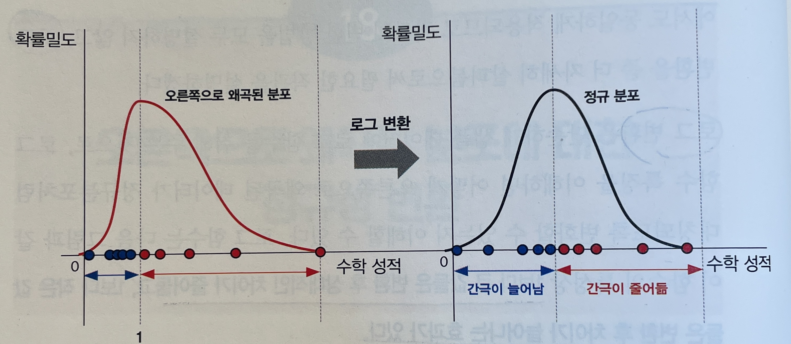
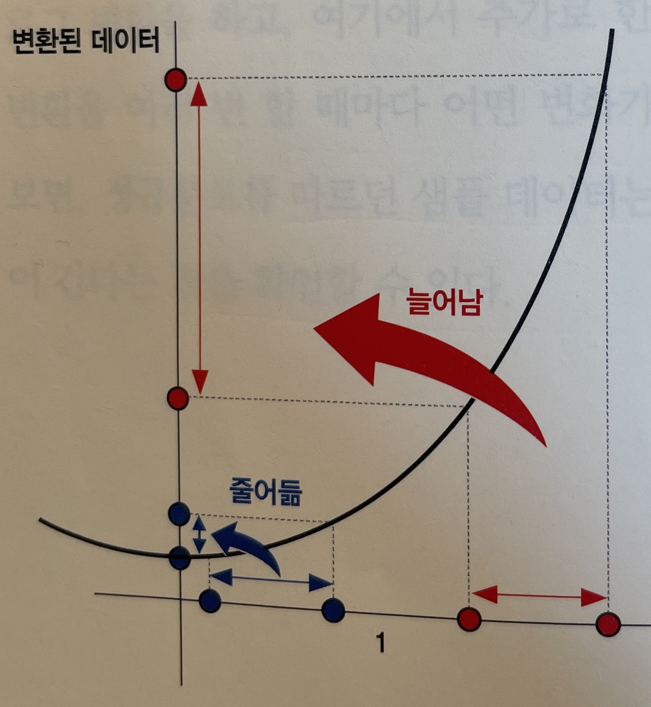
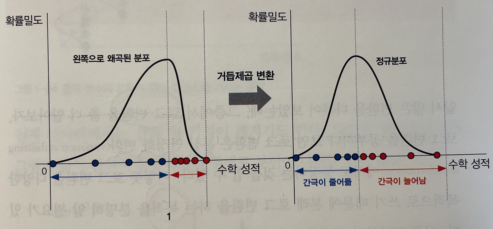
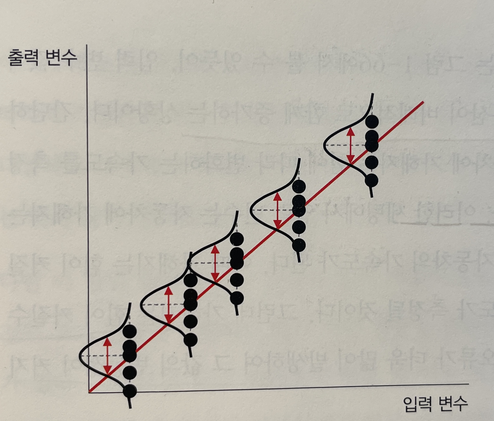
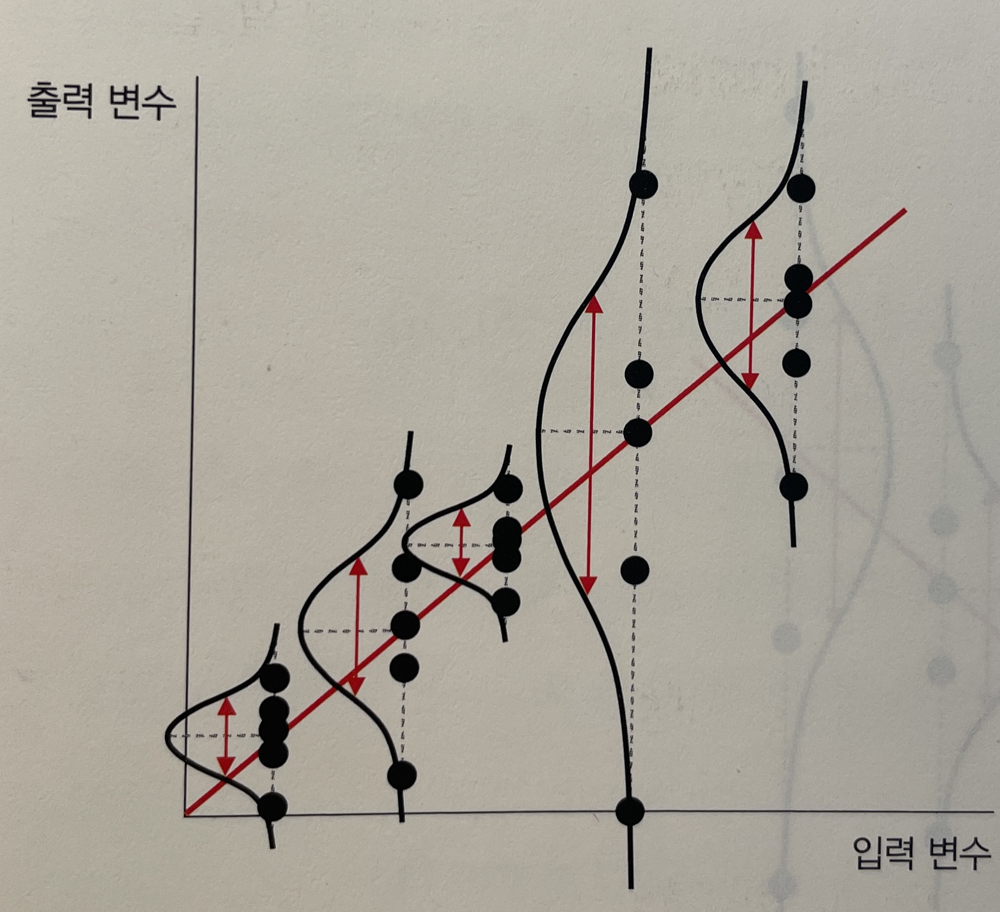
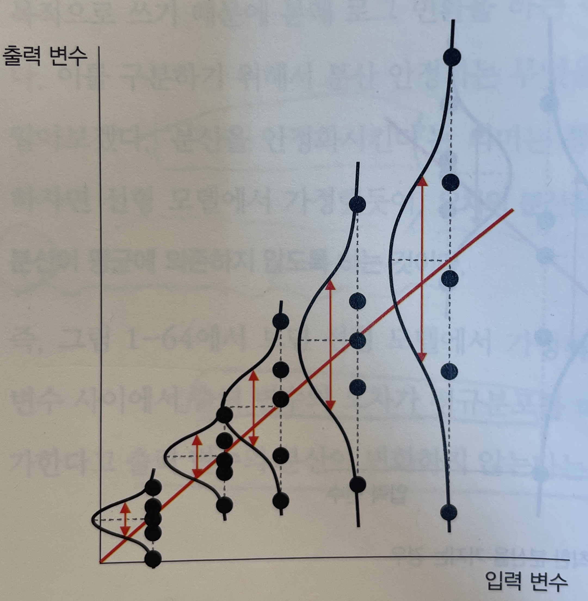

Summary
- 정규성 변환과 분산 안정화는 통계 분석의 가정을 충족시키기 위한 필수 전처리 과정이며, 로그 변환이 가장 널리 사용된다.
- 공분산행렬은 다변량 데이터의 퍼짐과 관계를 표현하며, 상관행렬은 이를 표준화하여 해석하기 쉽게 만든 것이다.
- 확률과 우도는 방향이 반대인 개념으로, 확률은 미래 데이터 예측에, 우도는 과거 파라미터 역추적에 사용된다.
들어가며
“데이터가 정규분포가 아닌데 로그만 씌우면 되는 걸까?” 비정규분포 데이터를 다루다 보면 반드시 마주치는 질문이다. 이 글은 왜도에 따라 어떤 정규성 변환을 선택해야 하는지에서 출발해, 등분산성을 확보하는 분산 안정화, 다변량 데이터를 표현하는 공분산행렬과 상관행렬, 그리고 확률과 우도의 방향 차이까지 이어서 정리한다.
정규성 변환
왜 정규성 변환이 필요한가
기존 데이터가 비정규분포라면 정규화나 표준화를 적용해도 비정규분포를 유지한다. 그러나 많은 통계 분석 방법론은 데이터의 정규성을 가정하기 때문에, 비정규분포 데이터를 정규분포 형태로 변환해야 한다. 이를 정규성 변환(normality transformation) 이라고 한다.
왜 정규성을 가정하는가
- 여러 통계 방법론에서 정규성을 가정한 상태에서 분석을 진행하면 계산이 수월하다.
- 일반적으로 많은 데이터가 정규분포를 따른다.
- 정규성을 가정한 특정 방법론의 입력값으로 사용하기 위해서는 정규성이 확보된 샘플 데이터가 필요하다.
왜도에 따른 변환 방법
정규성 변환을 적용하기 전에 왜도(skewness) 를 이해해야 한다.
왜도란
데이터 분포의 좌우 비대칭성을 나타내는 척도로, 피어슨의 최빈값 왜도계수를 활용한다.
- 왜도 공식: 평균 - 최빈값
- 왜도 > 0 (우측 왜곡): 데이터가 왼쪽으로 몰려있고 오른쪽 꼬리가 김
- 왜도 < 0 (좌측 왜곡): 데이터가 오른쪽으로 몰려있고 왼쪽 꼬리가 김
왜도가 0보다 큰 경우 (오른쪽 꼬리가 긴 분포)
데이터가 왼쪽으로 몰려있는 경우 다음 변환을 사용한다.
- 로그 변환 (log transformation)
- 제곱근 변환 (square root transformation)
- 역수 변환 (reciprocal transformation)
로그 변환이 가장 대표적이며, 1보다 큰 값은 압축하고 1보다 작은 값은 확장하는 효과를 낸다.

그림. 로그 변환

그림. 로그 변환에 의한 분포 변화
무작정 로그 변환하면 안 되는 이유
- 이미 정규분포를 따르는 경우 로그 변환을 취하면 오히려 대칭성이 파괴된다.
- 변환 후 데이터가 왼쪽으로 왜곡(오른쪽으로 몰림)될 수 있다.
- 따라서 변환 전 반드시 데이터 분포를 확인해야 한다 (히스토그램, Q-Q 플롯, 정규성 검정).
로그 변환을 통해 정확히 정규분포를 따르는 경우를 로그-정규분포(log-normal distribution) 라고 한다.
왜도가 0보다 작은 경우 (왼쪽 꼬리가 긴 분포)
데이터가 오른쪽으로 몰린 분포에는 다음 변환을 사용한다.
- 거듭제곱 변환 (power transformation)
- 지수 변환 (exponential transformation)
로그 변환과 반대로 1보다 작은 값은 압축하고 1보다 큰 값은 확장한다.

그림. 제곱 변환

그림. 제곱 변환에 의한 분포 변화
분산 안정화
개념
분산 안정화 변환(variance stabilizing transformation)은 선형 모델 가정 중 하나인 등분산성(homoscedasticity)을 충족시키기 위한 과정이다. 선형 모델에서는 출력 변수의 오차가 정규분포를 따를 때, 입력 변수 값이 변화해도 출력 변수의 분산은 일정해야 한다.
분산 불균일의 문제
실제 데이터에서는 이러한 가정이 깨지는 경우가 있다.

그림. 분산이 일정한 경우 (등분산성 충족)

그림. 분산이 불규칙한 경우 (등분산성 위반)
입력 변수가 증가할수록 출력 변수 오차의 분산이 비례적으로 증가하는 경우도 있다.

그림. 분산이 입력 변수에 비례해 증가하는 경우
분산이 평균에 비례하는 경우
- 금융 수익률(%): 자산이 1백만원일 때와 1억원일 때, 수익률 5%는 각각 5만원과 5백만원 변동이므로 평균에 따라 분산이 커진다.
- 매출: 고객 수, 구매 횟수, 객단가 등 여러 확률적 요인의 곱과 합으로 결정되어 분산이 증가한다.
로그 변환을 통한 분산 안정화
평균에 따라 분산이 증가하는 경우 로그 변환이 가장 널리 사용된다. 기존 모델에서 평균()이 커질수록 오차()의 영향이 커져 분산이 증가한다.
- : 출력 변수
- : 평균
- : 오차
로그를 취하면 곱셈적 구조가 덧셈적 구조로 변환된다.
이제 과 가 독립적이므로, 평균값이 커져도 분산이 더 이상 같이 커지지 않는다. 즉, 로그 변환을 통해 분산이 평균에 비례하는 종속 관계를 독립적으로 변환한다.
공분산행렬과 상관행렬
공분산의 개념
변수가 2개 이상일 때, 데이터의 퍼짐 정도를 파악하기 위해 분산과 공분산을 모두 고려한 공분산행렬을 활용한다. 모집단의 공분산 수식은 다음과 같다.
- , : 두 확률 변수
- : 기댓값
이를 풀어쓰면 각 변수의 편차 곱에 대한 평균이다. 만약 대신 를 넣으면 분산이 된다.
즉, 공분산은 분산을 포함하는 일반화된 개념이다.
공분산의 직관적 이해
두 변수의 평균에서 벗어난 정도를 서로 곱한 값으로 부호가 결정된다.
- 두 변수 모두 평균보다 크거나 작음: 또는 → 양수
- 한 변수는 평균보다 크고, 다른 변수는 작음: → 음수
- 한 변수가 상수값: → 0 (독립)
공분산행렬
공분산을 행렬로 표현하면 다음과 같다.
공분산행렬은 대칭행렬이다 ().
- 대각선 성분 (): 각 축 방향의 퍼짐 정도 (분산)
- 비대각선 성분 (): 평면의 기울기 (공분산)
상관행렬
상관계수를 나타낸 상관행렬은 다음과 같다.
- , : 각 변수의 표준편차
상관계수는 공분산의 표준화 버전이다. 공분산을 각 변수의 표준편차로 나누어 표준화하며, 값의 범위는 이다.
공분산행렬과 상관행렬의 관계
- 표준화시킨 데이터의 공분산행렬 = 원본 데이터의 상관행렬
- 이것이 상관계수가 항상 에서 사이인 이유다.
확률과 우도
추론 통계의 두 관점
추론 통계에는 두 가지 관점이 있다.
- 빈도주의: 최대우도추정 (MLE)
- 베이지안: 최대사후확률추정 (MAP)
우도(likelihood) 는 빈도주의 관점에서 반드시 등장하는 개념으로, 확률과 혼동하기 쉽다.
확률 (Probability)
확률은 특정 사건(event)이 일어날 가능성이다. 관련 용어는 다음과 같다.
- 시행(experiment): 동일한 조건에서 반복 가능한 실험이나 관측
- 샘플 공간(sample space): 시행에서 발생 가능한 모든 결과의 집합 ()
- 사건(event): 샘플 공간의 부분집합
특정 사건 에 대한 확률 는 다음과 같이 정의된다.
확률을 나타내는 함수
데이터 형태에 따라 두 가지로 구분된다.
확률질량함수 (PMF) — 이산형 데이터
- 주사위 눈(1, 2, 3, 4, 5, 6)처럼 정수 값
- 각 원소별로 확률을 구할 수 있음
확률밀도함수 (PDF) — 연속형 데이터
- 키, 몸무게처럼 연속적인 값
- 특정 값의 확률은 0이며, 구간의 확률만 의미 있음
- 구간 내 함수를 적분하여 구한 면적 = 확률
우도 (Likelihood)
우도(likelihood, 가능도)는 관측된 데이터가 특정 파라미터 값을 가지는 확률분포에서 나왔을 가능성의 정도다. 확률과 방향이 반대다.
- 확률: 파라미터를 알고 있을 때, 미래 데이터를 예측
- 우도: 데이터를 알고 있을 때, 과거의 파라미터를 역추적
수식적 정의
- : 데이터 가 주어졌을 때, 파라미터 일 우도 (변수: )
- : 파라미터 가 주어졌을 때, 데이터 의 확률밀도 (변수: )
예시 — 동전 던지기
동전의 앞면 확률을 라 할 때, 두 관점은 무엇을 고정하느냐가 다르다.
확률의 관점 ( 고정, 미지수)
- “공정한 동전()을 던졌을 때, 앞면()이 나올 확률은?”
우도의 관점 ( 고정, 미지수)
- “앞면()이 나왔다. 이 동전이 일 가능성과 일 가능성 중 어느 게 높은가?”
- 해석: 앞면이 관측된 상황에서는 일 가능성(우도)이 더 높다.
결합 우도
관측 데이터가 여러 개이고 각 시행이 독립적(i.i.d)이면 각 확률의 곱으로 표현된다.
- : 번째 관측값
- : 관측 데이터의 개수
통계학에서는 이 우도를 최대화하는 를 찾는다 (최대우도추정, MLE). 계산의 편의를 위해 로그를 취해 곱을 합으로 바꾼다.
확률과 우도 비교
| 구분 | 확률(Probability) | 우도(Likelihood) |
|---|---|---|
| 관점 | 도박사 | 탐정 |
| 상황 | 파라미터 를 이미 알고 있음 | 이미 발생한 데이터 를 보고 있음 |
| 목적 | 미래 데이터 예측 | 과거의 원인(파라미터) 추정 |
| 관심사 | ”앞으로 던질 주사위에서 1이 나올까?" | "이 결과를 만든 파라미터가 무엇일까?” |
| 방향 | 원인(파라미터) → 결과(데이터) | 결과(데이터) → 원인(파라미터) |
| 수식 |
직관적 이해
- 확률: 모델이 주어졌을 때, 데이터가 관측될 확률
- 우도: 데이터가 주어졌을 때, 이 데이터를 설명하는 모델의 적합도
마치며
- 왜도가 양수면 로그·제곱근·역수 변환을, 음수면 거듭제곱·지수 변환을 쓴다. 변환 전 반드시 분포를 확인한다.
- 분산이 평균에 비례해 커지면 로그 변환으로 곱셈 구조를 덧셈 구조로 바꿔 등분산성을 확보한다.
- 상관행렬은 공분산행렬을 표준화한 것이며, 확률과 우도는 무엇을 고정하고 무엇을 변수로 두느냐에 따라 방향이 뒤집힌다.
시리즈 네비게이션
- 이전 장: 2. 기초 통계량과 스케일링
Reference